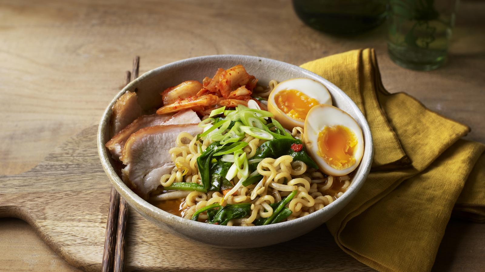

Home
Ramen Recipe

Description
Take the usual ramen up a notch with this quick homemade ramen. Fresh veggies and herbs make this extra delicious, healthy, and cozy!
Ingredients
- Ramen noodles (our classic Maruchan package is all we need, sans the flavor packet!)
- Garlic and ginger
- Broth (chicken or veg)
- Dried shiitake mushrooms
- Veggies like carrots or kale
- All your favorite toppings like some panko, egg, chili oil, etc.
Steps
- Stir-Fry The Aromatics:Garlic and ginger, what a delicious duo. This is where the flavor is, friends.
- Make Your (Easy!) Broth:Add some chicken broth and dried shiitake mushrooms for some umami punch.
- Add Noodles:Cook your noodles right in the broth with some scallions (more flavor, please!).
- Add Veg:Thinly sliced kale, shredded carrots, whatever you would like! Cook until just tender.
- Top It Off:Add some crunchy panko crumbs, a soft-boiled egg, chili oil, hot sauce, sesame oil, and/or soy sauce, whatever your heart desires.